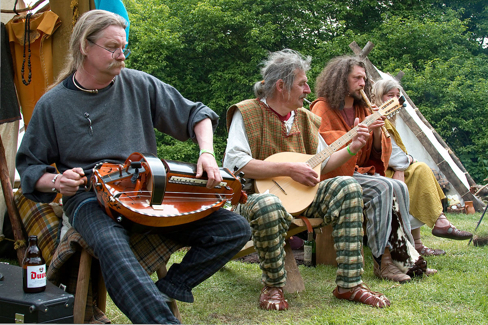
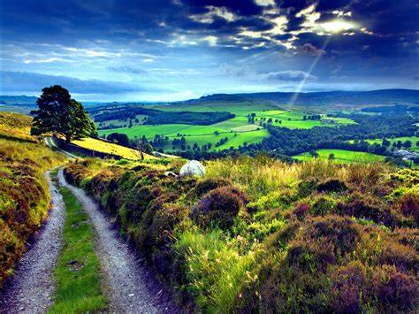
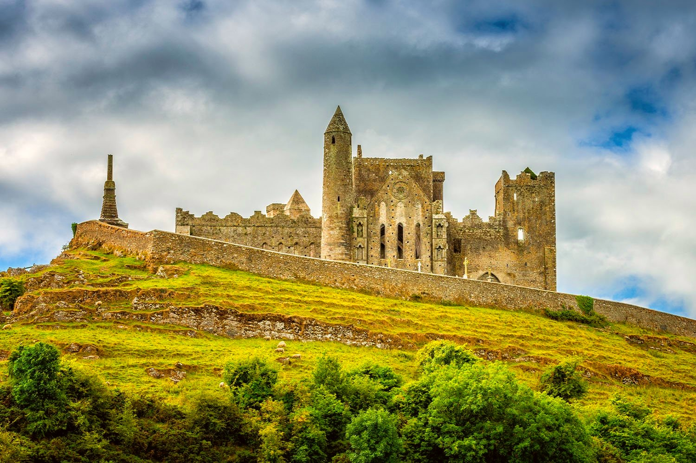
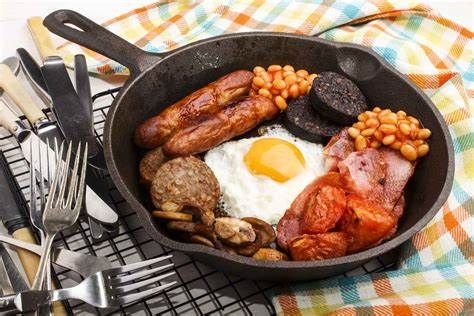
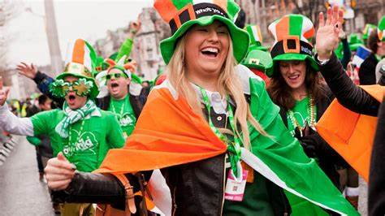

Welcome to Ireland
Culture
Discover the rich cultural heritage of Ireland, where traditions are deeply woven into everyday life. From traditional music sessions in cozy pubs to the energetic reels of Irish dance, immerse yourself in the vibrant tapestry of Irish culture. Delve into the mystical tales of ancient folklore and the enduring spirit of the Irish people.
Nature
Explore the breathtaking landscapes of Ireland, renowned for their rugged beauty and serene charm. Wander through lush green valleys dotted with ancient castles and meander along dramatic coastal cliffs, where the Atlantic Ocean crashes against the rocky shores. Discover the enchanting beauty of places like the Cliffs of Moher, the mystical Giant's Causeway, and the tranquil lakes of Killarney.
History
Uncover the rich tapestry of Irish history, shaped by ancient civilizations, medieval kingdoms, and modern influences. From the prehistoric sites of Newgrange to the medieval strongholds of Dublin and Kilkenny, trace the footsteps of warriors, saints, and scholars. Learn about Ireland's struggle for independence, its cultural renaissance, and its role in shaping global literature, art, and politics.
Food
Indulge in the hearty flavors of traditional Irish cuisine, celebrated for its comforting simplicity and wholesome ingredients. Sample iconic dishes like Irish stew, made with tender lamb, root vegetables, and savory broth, or savor the crisp texture of freshly baked soda bread. Experience the warmth of Irish hospitality in quaint village pubs or elegant dining rooms, where every meal is a celebration of culinary heritage.
Festivals
Immerse yourself in the festive spirit of Ireland, where every season brings a lively celebration of music, arts, and community. Experience the electric atmosphere of St. Patrick's Day, Ireland's national holiday, marked by parades, concerts, and a sea of emerald green. Celebrate the creativity of the Galway International Arts Festival or dance to the rhythm of traditional music at the Fleadh Cheoil na hÉireann.
Travel Tips

Plan your journey to Ireland with practical travel tips to make the most of your adventure. Discover the best times to visit, from the vibrant blooms of spring to the golden hues of autumn. Navigate the charming towns and bustling cities with ease, whether by car, train, or the scenic routes of Ireland's Wild Atlantic Way. Embrace the warmth of Irish hospitality in cozy bed and breakfasts or luxury accommodations, ensuring a memorable stay in the Emerald Isle.